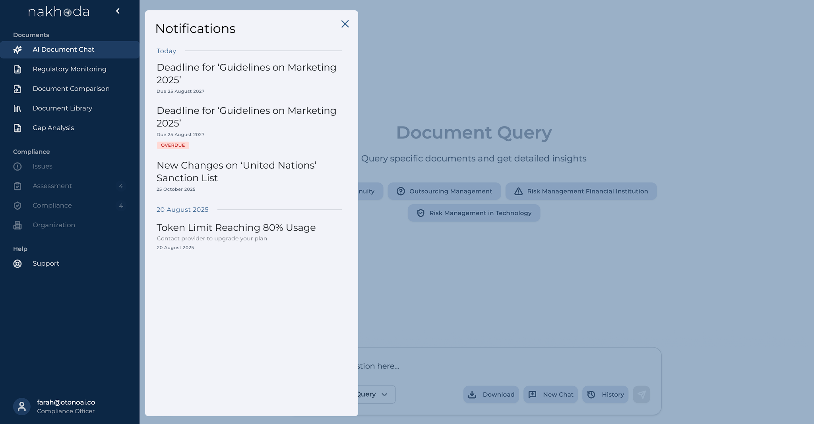
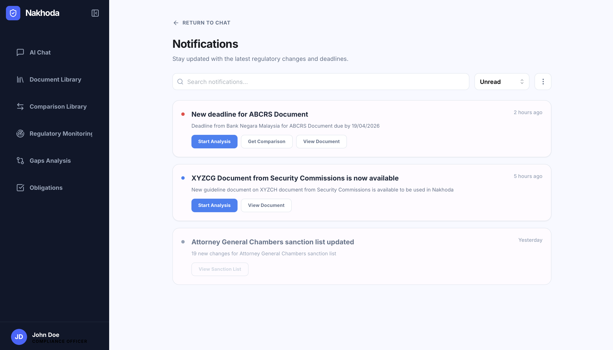

The client needed a notification system to alert compliance users about three specific events: new regulatory documents, documents with upcoming effective dates, and changes to sanction lists. I was already in the loop on the client requirements, so the brief came through directly — no intermediary spec, just the requirement and the expectation that I'd figure out the design.
My first instinct was to look at how other products handle notifications. I referenced social media platforms and B2B SaaS tools — and they all looked more or less the same: a modal near the profile icon, an icon, a title, a short description. So I designed exactly that.
It looked fine. It felt familiar. And that was the problem.

My boss reviewed it and asked a simple question: "Where do you want users to go after this?"
I didn't have a good answer. I said they could view the document — but even as I said it, I realised that was incomplete. Viewing the document was just one thing a user might want to do. They might also want to run a gap analysis on it, compare it to a previous version, or query it in the AI chat. My notification design had assumed one destination. The product didn't work that way.
I went back to the product flows on my own to understand how the modules connected. What I found was that a regulatory document isn't just a piece of content to read — it's an entry point into multiple workflows. Depending on what the user needs to do, the same document could lead to four completely different places in the product.
The real design question wasn't "what should the notification look like?" It was "what should users be able to do the moment they see it?"
I also came across Google Material 3's documentation on notifications with multiple CTAs — which confirmed that this pattern existed and had been thought through. That gave me the structural confidence to pursue it rather than force a single path.
Instead of leading users to one fixed destination, the redesigned notification surfaces contextual actions based on the document type and what's available for that specific document. There's one primary action to guide the user's attention, with secondary actions available for those who want to go further.
Depending on the notification type, a user can:
- Generate a gap analysis mapped to their internal documents
- View a version comparison against the previous regulatory document
- View the document details in the document library
- Start an AI chat to query the document directly

Not every action appears for every notification — the system shows only what's relevant for that document type, which keeps the design focused without oversimplifying.
Looking back, I'd approach the downstream pages differently. The notification redesign solved the immediate problem — users now know what they can do next. But the deeper issue is that the document library and comparison pages themselves weren't designed to support multiple intents. A user who lands there from a notification still has limited paths forward.
The right fix wasn't just the notification. It was ensuring that every page a notification could land on was itself designed to expand the user's options — not close them down. That's a systems-level consideration I'd flag much earlier in the process next time.
"Familiar patterns aren't always wrong — but they're only right if the context matches. Compliance notifications exist to trigger decisions, not just awareness. Once I understood that, the design became obvious. The hard part was getting there."